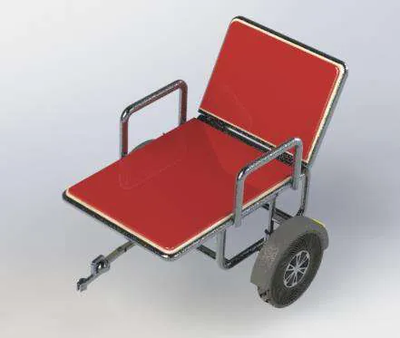
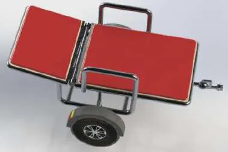
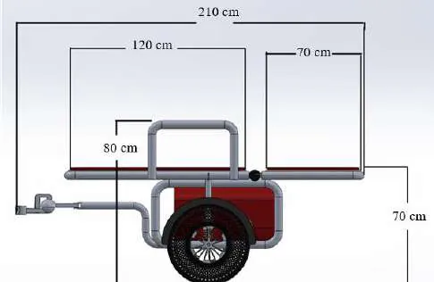
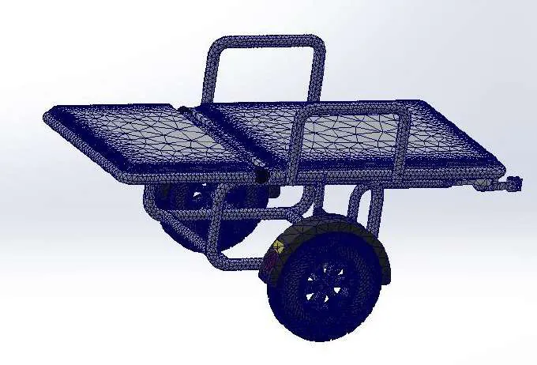
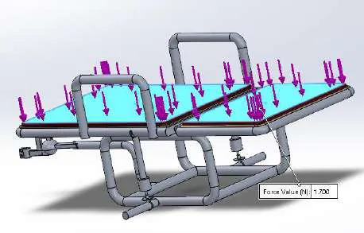
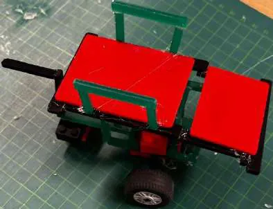
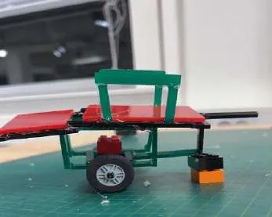

← All workSheet 06 of 08
Course 62696 Product Development · DTU · team of 4
FirstRider Emergency Bike Trailer
A bike trailer that unfolds into a stretcher, so paramedics on e-bikes can reach and carry patients where earthquake debris blocks ambulances.
- Context
- Course 62696, DTU
- Team
- 4 people
- My role
- Shared across the project; CAD and assembly drawings
- Tools
- SolidWorks, Simulink, Granta EduPack
- 6082-T6
- aluminium frame
- <170 kg
- recommended total load
- 1:10
- scale prototype
What we built
After an earthquake, blocked roads and debris can stop ambulances. The brief was a trailer for an electric bike that paramedics can use for first aid and to carry patients short distances over rough ground.
- Research, competitor analysis and a SWOT before choosing between concepts.
- A frame that works as a trailer and opens into a stretcher, about 210 cm long when unfolded.
- Aluminium 6082-T6 for the frame, chosen in Granta EduPack on strength and price.
- Static strength checks of the frame in SolidWorks and a suspension model in Simulink. We recommend keeping the total load under 170 kg.
- SolidWorks mass about 52.7 kg. Estimated material cost DKK 1,674–2,351.
- A 1:10 scale physical prototype.


My part
Team of four
The report notes that the four of us shared the work evenly, from research and concept choice to the CAD, strength checks, costing and prototype. I worked on the CAD model and the assembly drawings for fabrication.











